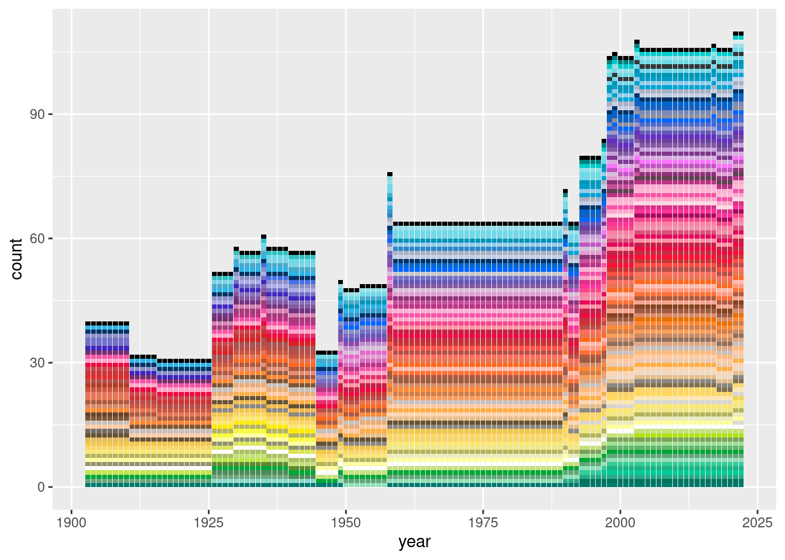

![]()
url <- "https://en.wikipedia.org/wiki/List_of_Crayola_crayon_colors"
raw <- url |>
polite::bow() |>
polite::scrape() |>
rvest::html_nodes("table.wikitable")What am I doing? Why am I here? Oh that’s right. So I was having coffee this morning reading the nerd news on mastodon as a girl likes to do and this this post by Kim Scheinberg caught my attention. The image comes from this blog post by Stephen Von Worley (he has a follow up too).
Interesting. The data come from the wikipedia list of Crayola crayon colours, and as it happens I know how to pull data from wikipedia tables into R without too much pain courtesy of this post by Isabella Velásquez. After a reading a little about the history of Crayola crayons I realise I am of course about to waste half a day on this…
It’s the prelude, baby
Politely scrape the tables from the wikipedia page:
The first table on the wikipedia page is the listing of the Crayola standard colours, so let’s pluck the first first table from our raw list and convert it to a data frame.
raw[[1]]{html_node}
<table class="wikitable sortable">
[1] <caption>\n</caption>
[2] <tbody>\n<tr>\n<th width="10%" class="sortable">Color\n</th>\n<th width=" ...At this point we can visually inspect to see if it looks right. It mostly does but… uh… the colors haven’t appeared, only those that had a listing on the web:
crayola <- raw |>
purrr::pluck(1) |>
rvest::html_table()
crayola# A tibble: 168 × 9
Color Name Hexad…¹ Years…² Notes 16-Bo…³ 24-Bo…⁴ 32-Bo…⁵ 64-Bo…⁶
<lgl> <chr> <chr> <chr> <chr> <chr> <chr> <chr> <chr>
1 NA Red "#ED0A… 1903–p… "" "Yes" "Yes" "Yes" "Yes"
2 NA Maroon "#C321… 1949–p… "Kno… "No" "No" "No" "No"
3 NA Scarlet "#FD0E… 1998–p… "Kno… "No" "Yes" "Yes" "Yes"
4 NA Brick Red "#C62D… 1958–p… "" "No" "No" "No" "Yes"
5 NA English Vermilion "" 1903–1… "Als… "" "" "" ""
6 NA Madder Lake "" 1903–1… "" "" "" "" ""
7 NA Permanent Gerani… "" 1903–c… "" "" "" "" ""
8 NA Maximum Red "" 1926–1… "Par… "" "" "" ""
9 NA Chestnut "#B94E… 1903–p… "Kno… "No" "No" "Yes" "Yes"
10 NA Orange-Red "#FF53… 1958–1… "" "" "" "" ""
# … with 158 more rows, and abbreviated variable names
# ¹`Hexadecimal in their website depiction[b]`, ²`Years in production[2]`,
# ³`16-Box`, ⁴`24-Box`, ⁵`32-Box`, ⁶`64-Box`Act I: It’s like a hanky code
Look, that’s not a big deal right? Not having any colours for a post about colours? Let’s set that aside and focus on the important things. Clean names:
crayola <- crayola |>
janitor::clean_names() |>
dplyr::rename(
listed = hexadecimal_in_their_website_depiction_b,
years = years_in_production_2
)
crayola# A tibble: 168 × 9
color name listed years notes x16_box x24_box x32_box x64_box
<lgl> <chr> <chr> <chr> <chr> <chr> <chr> <chr> <chr>
1 NA Red "#ED0… 1903… "" "Yes" "Yes" "Yes" "Yes"
2 NA Maroon "#C32… 1949… "Kno… "No" "No" "No" "No"
3 NA Scarlet "#FD0… 1998… "Kno… "No" "Yes" "Yes" "Yes"
4 NA Brick Red "#C62… 1958… "" "No" "No" "No" "Yes"
5 NA English Vermilion "" 1903… "Als… "" "" "" ""
6 NA Madder Lake "" 1903… "" "" "" "" ""
7 NA Permanent Geranium … "" 1903… "" "" "" "" ""
8 NA Maximum Red "" 1926… "Par… "" "" "" ""
9 NA Chestnut "#B94… 1903… "Kno… "No" "No" "Yes" "Yes"
10 NA Orange-Red "#FF5… 1958… "" "" "" "" ""
# … with 158 more rowsSo. What’s that maxim about never using background colour to express substantive data in a table? We’ve run afoul of that. Let’s take a look at the elements of our html table that are supposed to contain the data:
cells <- raw[[1]] |> rvest::html_elements("td")
cells{xml_nodeset (1512)}
[1] <td style="background: #ED0A3F; color: white"> \n</td>
[2] <td>Red\n</td>
[3] <td align="center" style="background:#E9E9E9">#ED0A3F\n</td>
[4] <td>1903–present\n</td>
[5] <td>\n</td>
[6] <td style="background:#9EFF9E;vertical-align:middle;text-align:center;" ...
[7] <td style="background:#9EFF9E;vertical-align:middle;text-align:center;" ...
[8] <td style="background:#9EFF9E;vertical-align:middle;text-align:center;" ...
[9] <td style="background:#9EFF9E;vertical-align:middle;text-align:center;" ...
[10] <td style="background: #C32148; color: white"> \n</td>
[11] <td>Maroon\n</td>
[12] <td align="center" style="background:#E9E9E9">#C32148\n</td>
[13] <td>\n<a href="/wiki/1949" title="1949">1949</a>–present\n</td>
[14] <td>Known as "Dark Red", 1949–1958.<sup id="cite_ref-WelterColorNames_4- ...
[15] <td style="background:#FFC7C7;vertical-align:middle;text-align:center;" ...
[16] <td style="background:#FFC7C7;vertical-align:middle;text-align:center;" ...
[17] <td style="background:#FFC7C7;vertical-align:middle;text-align:center;" ...
[18] <td style="background:#FFC7C7;vertical-align:middle;text-align:center;" ...
[19] <td style="background: #FD0E35; color: white"> \n</td>
[20] <td>Scarlet\n</td>
...You can see the problem looking at the 1st and 10th line of the output here. The piece of information we need is embedded in the bloody css style attribute, and only in the style attribute. Sigh.
There’s probably a better solution but my solution was to realize that I can match each colour in my crayola table to the node cells using the text information, because the colour names have been correctly included. Noticing that, it’s a lot easier because the cells that have the information I want are always to the left of (i.e., before) the one containing the name. So I extract the cell text:
cell_text <- cells |>
rvest::html_text() |>
stringr::str_remove_all("\n$")Then I do the world’s hackiest matching operation to find the nodes in the raw table that contain my missing colour data…
ind <- which(cell_text %in% crayola$name) - 1I use rvest to extract the style attribute, then stringr to pull the hex
background <- cells[ind] |>
rvest::html_attr("style") |>
stringr::str_extract("#[0-9ABCDEF]{6}")
background [1] "#ED0A3F" "#C32148" "#FD0E35" "#C62D42" "#CC474B" "#CC3336" "#E12C2C"
[8] "#D92121" "#B94E48" "#FF5349" "#FE4C40" "#FE6F5E" "#B33B24" "#CC553D"
[15] "#E6735C" "#FF9980" "#E58E73" "#FF7034" "#FF681F" "#FF8833" "#FFB97B"
[22] "#ECAC76" "#E77200" "#FFAE42" "#F2BA49" "#FBE7B2" "#F2C649" "#F8D568"
[29] "#FCD667" "#FED85D" "#FBE870" "#F1E788" "#FFEB00" "#B5B35C" "#ECEBBD"
[36] "#FAFA37" "#FFFF99" "#FFFF9F" "#D9E650" "#ACBF60" "#AFE313" "#BEE64B"
[43] "#C5E17A" "#5E8C31" "#7BA05B" "#9DE093" "#63B76C" "#4D8C57" "#01A638"
[50] "#6CA67C" "#5FA777" "#93DFB8" "#33CC99" "#1AB385" "#29AB87" "#00CC99"
[57] "#00755E" "#8DD9CC" "#01796F" "#30BFBF" "#00CCCC" "#008080" "#8FD8D8"
[64] "#95E0E8" "#6CDAE7" "#2D383A" "#76D7EA" "#7ED4E6" "#0095B7" "#009DC4"
[71] "#02A4D3" "#47ABCC" "#2EB4E6" "#339ACC" "#93CCEA" "#2887C8" "#003366"
[78] "#0066CC" "#1560BD" "#0066FF" "#A9B2C3" "#C3CDE6" "#4570E6" "#3C69E7"
[85] "#7A89B8" "#4F69C6" "#8D90A1" "#8C90C8" "#7070CC" "#9999CC" "#ACACE6"
[92] "#766EC8" "#6456B7" "#3F26BF" "#8B72BE" "#652DC1" "#6B3FA0" "#8359A3"
[99] "#8F47B3" "#C9A0DC" "#BF8FCC" "#803790" "#733380" "#D6AEDD" "#C154C1"
[106] "#FC74FD" "#732E6C" "#E667CE" "#E29CD2" "#8E3179" "#D96CBE" "#D8BFD8"
[113] "#C8509B" "#BB3385" "#D982B5" "#A63A79" "#A50B5E" "#614051" "#F653A6"
[120] "#DA3287" "#FF3399" "#FBAED2" "#FFB7D5" "#FFA6C9" "#F7468A" "#E30B5C"
[127] "#FDD7E4" "#E62E6B" "#DB5079" "#FC80A5" "#F091A9" "#FF91A4" "#A55353"
[134] "#CA3435" "#FEBAAD" "#F7A38E" "#E97451" "#AF593E" "#9E5B40" "#87421F"
[141] "#926F5B" "#DEA681" "#D27D46" "#664228" "#FA9D5A" "#EDC9AF" "#FFCBA4"
[148] "#805533" "#FDD5B1" "#EED9C4" "#665233" "#837050" "#E6BC5C" "#92926E"
[155] "#E6BE8A" "#C9C0BB" "#DA8A67" "#C88A65" "#000000" "#736A62" "#8B8680"
[162] "#C8C8CD" "#D9D6CF" "#FFFFFF" "#F1D651" "#DDEBEC" "#D9DAD2" "#C0D5F0"Yay, those look like hex colours. Most importantly I’ve taken steps to ensure they’ve been extracted in the correct order so it’s easy to insert them where they should have been in the first place:
crayola$color <- background
crayola# A tibble: 168 × 9
color name listed years notes x16_box x24_box x32_box x64_box
<chr> <chr> <chr> <chr> <chr> <chr> <chr> <chr> <chr>
1 #ED0A3F Red "#ED0… 1903… "" "Yes" "Yes" "Yes" "Yes"
2 #C32148 Maroon "#C32… 1949… "Kno… "No" "No" "No" "No"
3 #FD0E35 Scarlet "#FD0… 1998… "Kno… "No" "Yes" "Yes" "Yes"
4 #C62D42 Brick Red "#C62… 1958… "" "No" "No" "No" "Yes"
5 #CC474B English Vermilion "" 1903… "Als… "" "" "" ""
6 #CC3336 Madder Lake "" 1903… "" "" "" "" ""
7 #E12C2C Permanent Geraniu… "" 1903… "" "" "" "" ""
8 #D92121 Maximum Red "" 1926… "Par… "" "" "" ""
9 #B94E48 Chestnut "#B94… 1903… "Kno… "No" "No" "Yes" "Yes"
10 #FF5349 Orange-Red "#FF5… 1958… "" "" "" "" ""
# … with 158 more rowsFinally.
Act II: One hundred years of tidyr
crayola <- crayola |>
# clean up the years column
dplyr::mutate(
years = years |>
stringr::str_remove_all(" ") |>
stringr::str_remove_all("\\[.\\]") |>
stringr::str_remove_all("circa") |>
stringr::str_replace_all("present", "2022") |>
stringr::str_replace_all("2021,2022", "2021-2022"),
) |>
# some colours appear in two contiguous intervals separated by
# commas: split those into separate columns first...
tidyr::separate(
col = years,
into = c("years_1", "years_2"),
sep = ",",
fill = "right"
) |>
# ...pivot longer so that each contiguous interval is a row
tidyr::pivot_longer(
cols = starts_with("years_"),
names_prefix = "years_",
names_to = "interval",
values_to = "years"
) |>
# drop empty rows for all those colours that didn't have a second
# contiguous interval
dplyr::filter(!is.na(years)) |>
# now split the "1935-1992" interval into two columns
tidyr::separate(
col = years,
into = c("year_started", "year_ended"),
fill = "right"
) |>
# if only a single year was given use it for the year end and the year start,
# and coerce strings to integers as appropriate
dplyr::mutate(
id = dplyr::row_number(),
year_ended = dplyr::if_else(is.na(year_ended), year_started, year_ended),
interval = as.integer(interval),
year_started = as.integer(year_started),
year_ended = as.integer(year_ended)
)
crayola# A tibble: 174 × 12
color name listed notes x16_box x24_box x32_box x64_box inter…¹ year_…²
<chr> <chr> <chr> <chr> <chr> <chr> <chr> <chr> <int> <int>
1 #ED0A3F Red "#ED0… "" "Yes" "Yes" "Yes" "Yes" 1 1903
2 #C32148 Maroon "#C32… "Kno… "No" "No" "No" "No" 1 1949
3 #FD0E35 Scarlet "#FD0… "Kno… "No" "Yes" "Yes" "Yes" 1 1998
4 #C62D42 Brick R… "#C62… "" "No" "No" "No" "Yes" 1 1958
5 #CC474B English… "" "Als… "" "" "" "" 1 1903
6 #CC3336 Madder … "" "" "" "" "" "" 1 1903
7 #E12C2C Permane… "" "" "" "" "" "" 1 1903
8 #D92121 Maximum… "" "Par… "" "" "" "" 1 1926
9 #B94E48 Chestnut "#B94… "Kno… "No" "No" "Yes" "Yes" 1 1903
10 #FF5349 Orange-… "#FF5… "" "" "" "" "" 1 1958
# … with 164 more rows, 2 more variables: year_ended <int>, id <int>, and
# abbreviated variable names ¹interval, ²year_startedAct III: I said pet, I said LUV, I said pet…
Transformer function to map each year in an interval to a row in a tibble
unpack_row <- function(id, color, name, interval, year_started, year_ended, ...) {
# https://en.wikipedia.org/wiki/CIELUV
HSV <- colorspace::coords(as(colorspace::hex2RGB(color), "HSV"))
LUV <- colorspace::coords(as(colorspace::hex2RGB(color), "LUV"))
tibble::tibble(
id = id,
color = color,
hue = HSV[1, "H"],
sat = HSV[1, "S"],
val = HSV[1, "V"],
L = LUV[1, "L"],
U = LUV[1, "U"],
V = LUV[1, "V"],
name = name,
year = year_started:year_ended,
...
)
}Apply it to each row to end up with a tidy tibble
crayola <- crayola |>
dplyr::group_by(id) |>
purrr::pmap_dfr(unpack_row) |>
dplyr::arrange(year, color) |>
dplyr::mutate(id = dplyr::row_number())The intermission is late, so what?
Never trust a website to last longer than an man on a Friday night so I’d better save the data
folder <- here::here("posts", "2022-12-18_crayola-crayon-colours")
readr::write_csv(crayola, fs::path(folder, "crayola.csv"))Act IV: Even Chekhov doesn’t expect this to go off
library(ggplot2)
crayola |>
dplyr::mutate(
# https://en.wikipedia.org/wiki/CIELUV#Cylindrical_representation_(CIELCh)
hue_like = atan2(V, U),
color = forcats::fct_reorder(color, hue_like)) |>
ggplot(aes(
x = year,
group = color,
fill = color
)) +
geom_bar(
position = "fill",
linetype = "blank",
width = 1,
show.legend = FALSE
) +
theme_void() +
scale_fill_identity() +
scale_x_continuous(expand = c(0, 0)) +
scale_y_continuous(expand = c(0, 0)) +
NULL
Reuse
Citation
BibTeX citation:
@online{navarro2022,
author = {Danielle Navarro and Danielle Navarro},
title = {Crayola Crayon Colours},
date = {2022-12-18},
url = {https://blog.djnavarro.net/posts/2022-12-18_crayola-crayon-colours},
langid = {en}
}
For attribution, please cite this work as: